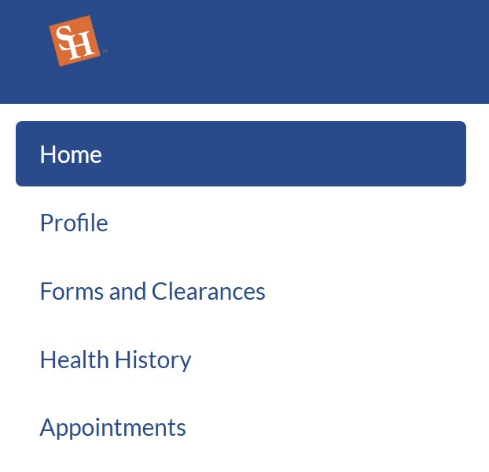

📌 Complete the TB Questionnaire & Submit Meningitis Vaccine Form
One to two weeks after submitting your I-20 documents, you will receive your I-20 via email.
Once you receive it, log in to the SHSU Patient Portal to complete the Tuberculosis (TB) Questionnaire.
Log in using your SHSU (SAM) account credentials and enter your date of birth when prompted.
Navigate to the Forms and Clearances section.
Select TB Risk Screen and complete the questionnaire.
💉 Meningitis Vaccine Submission
Download and print this meningitis vaccination form. Have it completed and signed by the doctor who administered your vaccine.
Upload the completed form to the Forms and Clearances section under Immunization Records.
Under the section titled Meningococcal ACWY, enter the type of vaccine you received and the exact date of administration.